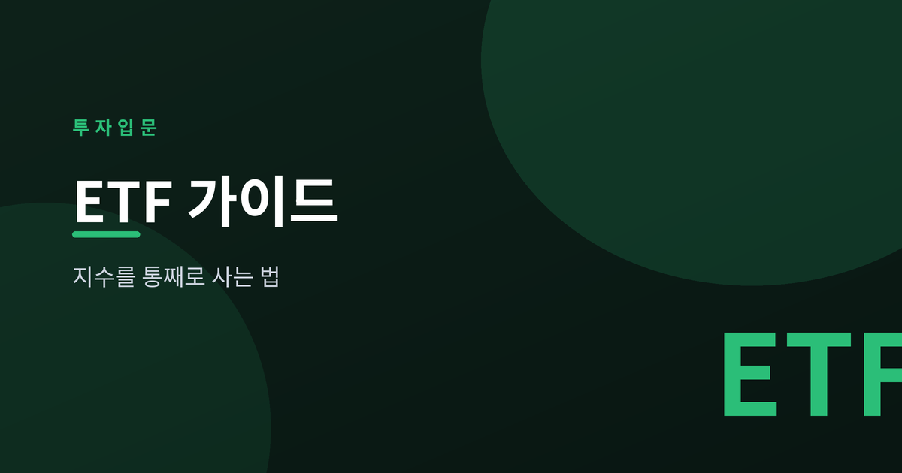
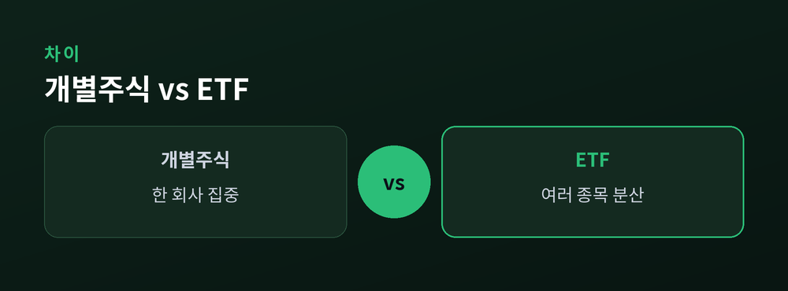
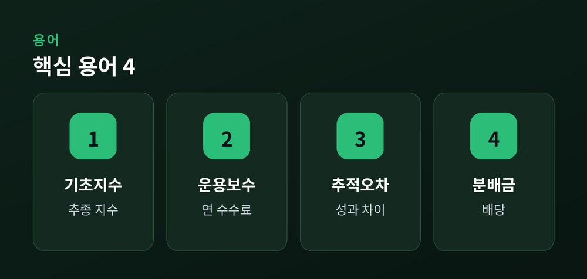
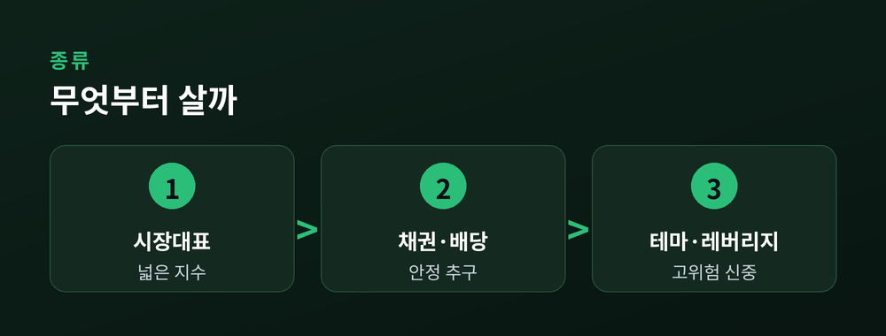

지수를 통째로 사는 법

ETF는 상장지수펀드입니다. 여러 종목을 한 바구니에 담은 펀드를 만들고, 그 바구니를 주식처럼 거래소에서 사고팝니다.
대부분의 ETF는 코스피200이나 S&P500 같은 지수를 그대로 따라가도록 설계됩니다. 이를 지수 추종, 즉 패시브 방식이라고 부릅니다.
ETF 한 주만 사도 그 지수에 담긴 수백 개 종목에 조금씩 나눠 투자한 효과가 생깁니다.

개별 주식은 한 회사에 집중 투자합니다. 그 회사가 흔들리면 손실이 큽니다.
ETF는 여러 종목에 분산되어 위험이 한 곳에 쏠리지 않습니다.
일반 펀드보다 운용보수가 낮고, 하루에 한 번이 아니라 장중에 실시간 거래가 됩니다.
또 어떤 종목을 담고 있는지 매일 공개되어 투명성도 높은 편입니다.

투자 전 몇 가지 용어만 알면 됩니다.
| 용어 | 뜻 |
|---|---|
| 기초지수 | ETF가 따라가는 지수 |
| 운용보수(TER) | 연간 떼는 수수료 |
| 추적오차 | 지수와의 성과 차이 |
| 분배금 | 주주에게 주는 배당 |
괴리율은 시장가격과 실제 가치의 차이를 뜻합니다. 이 값이 크면 비싸게 사는 셈이니 확인이 필요합니다.

ETF는 종류가 많습니다. 시장대표(코스피200·S&P500), 채권, 배당, 특정 섹터나 테마형까지 다양합니다.
초보라면 저비용의 넓은 시장 지수부터 시작하는 것이 안전합니다.
테마형이나 레버리지·인버스는 변동이 크고 장기 보유에 불리해 신중해야 합니다.
보수를 꼭 확인하고, 오래 나눠 담는 장기·분산 관점을 지키세요.
이 글은 정보 제공이며 특정 상품 투자 권유가 아닙니다.